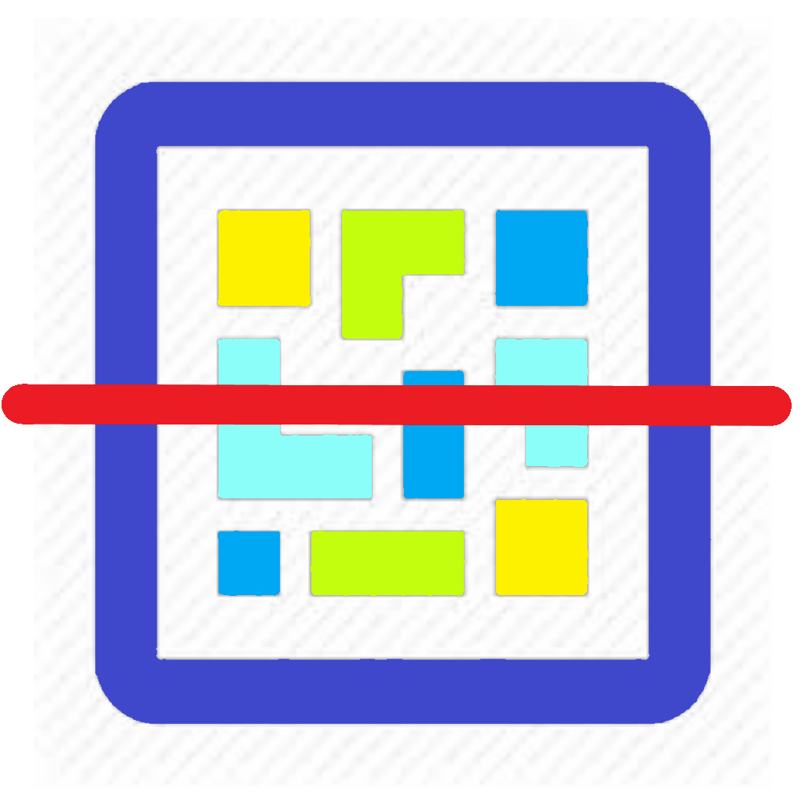

<ion-header [translucent]="true">
  <ion-toolbar color="dark">
    <ion-title>
      Leitor
    </ion-title>
  </ion-toolbar>
</ion-header>

<ion-content [fullscreen]="true" color="medium" class="ion-justify-content-center">
  <div class="screen">
    <div class="scan">
      
    </div>
  </div>
</ion-content>

<!-- Footer without a border -->
<ion-footer class="ion-no-border">
  <ion-toolbar color="dark">
    <ion-button color="primary" (click)="lerQRCode()" fill="block">Ler QRCode</ion-button>
  </ion-toolbar>
</ion-footer>